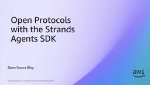

AWS Open Source Blog
フィード

Open Protocols with the Strands Agents SDK 1
1
AWS Open Source Blog
If you are building AI agents, you have likely encountered a growing list of protocol acronyms—MCP, A2A, UTCP, AG-UI, and x402—that can feel overwhelming. The open source community has converged on several complementary protocols. An AI agent is only as useful as the systems it can reach: internal tools and data, the external APIs your […]
8日前

Building secure AI agents at scale: Introducing Loom for AWS
AWS Open Source Blog
As organizations move to adopt agentic capabilities to accelerate their business objectives, they are challenged with enabling those capabilities within a security and governance framework that complies with enterprise requirements. Some organizations lean into the promise of serverless capabilities, as those fully managed services enable them to build fast and deliver customer value quickly. Amazon […]
15日前
Introducing MCP server for Registry of Open Data on AWS
AWS Open Source Blog
Today, we are launching an open source Model Context Protocol (MCP) server that brings AI-powered dataset discovery to Registry of Open Data on AWS (RODA). As of today, RODA hosts over 1,100 high-value datasets from more than 400 organizations, spanning satellite imagery, life sciences, climate, geospatial, and more. Ask a research question in Kiro, Claude […]
17日前
Building a Stateful IT Service Desk Agent with LangGraph on Amazon EKS
AWS Open Source Blog
IT support teams face a persistent challenge: employees expect instant answers to common questions (VPN setup, single sign-on troubleshooting, new-hire onboarding), but novel or complex issues still require human expertise. An AI agent that confidently answers, “How do I reset my VPN?” but hallucinates a response to “My IAM Identity Center session keeps expiring after […]
1ヶ月前
Open Governance for MySQL: A Step Forward for the Community
AWS Open Source Blog
MySQL — the open source database behind millions of applications worldwide — is opening a new chapter. Today, Oracle announced a community governance model for MySQL that creates pathways for the broader community to participate in the project’s development and direction. This post explains why AWS supports this move and what it means for the […]
1ヶ月前
Governing AI Assets at Scale with MCP Gateway and Registry
AWS Open Source Blog
Enterprises that onboard AI assets (MCP servers, agents, skills, and multi-step workflows) need to govern these assets and make them discoverable without blocking innovation. Central IT maintains a list of approved MCP servers and skills for the organization. Each line of business also publishes its own assets to its team, and often to the wider […]
1ヶ月前
Introducing Trusted Remote Execution: Policy-Enforced Scripts for AI Agents and Humans
AWS Open Source Blog
Today, we’re announcing Trusted Remote Execution (Rex, for short) — an open source scripting runtime where every system operation is authorized by policy. Scripts are written in Rhai, a lightweight language with no built-in system access. The only way to reach the host is through operations Rex explicitly provides, which are authorized against a Cedar […]
3ヶ月前
Decoupling Authorization at Scale: MongoDB Atlas and Cedar-Based Resource Policies
AWS Open Source Blog
As organizations scale applications, managing authorization becomes increasingly complex. What starts as role-based permissions quickly evolves into intricate rules spanning multiple services, regions, and compliance requirements. Traditional approaches of embedding authorization logic in application code lead to fragmented policies scattered across codebases, making them difficult to maintain, audit, and scale. These challenges have become more […]
3ヶ月前
Deploying cloud-based engineering workbenches with the Virtual Engineering Workbench on AWS
AWS Open Source Blog
Introduction Organizations in automotive, manufacturing, and embedded systems increasingly rely on cloud-based development environments to reduce hardware dependency and accelerate software delivery. As vehicle architectures shift toward software-defined platforms, engineering teams need access to specialized toolchains, virtual hardware models, and simulation environments that are consistent across sites and reproducible across projects. Provisioning these environments manually […]
3ヶ月前
OCSF Achieves ITU Support: Powering AI-Ready Security Operations
AWS Open Source Blog
The security industry stands at an inflection point. In November 2024, the Open Cybersecurity Schema Framework (OCSF) joined the Linux Foundation, cementing its role as a vendor-neutral, open source standard for the global security community. Last summer at Black Hat 2025, we showed you how OCSF was powering AI-driven security operations. Then in December 2025, […]
4ヶ月前
AWS and Others Invest $12.5M to Defend the Open Source Ecosystem from AI Threats
AWS Open Source Blog
AWS, Anthropic, Google, Microsoft, and OpenAI today announced a joint $12.5 million investment with the Linux Foundation to help open source projects address a surge in AI-enhanced and AI-generated security vulnerability reports. Both the Alpha Omega initiative and the Open Source Security Foundation (OpenSSF) will receive funding through the Linux Foundation grants. Software security is at […]
4ヶ月前
Introducing Strands Labs: Get hands-on today with state-of-the-art, experimental approaches to agentic development
AWS Open Source Blog
We’re introducing Strands Labs, a new Strands GitHub organization designed to give developers the ability to get hands-on with experimental, state-of-the-art approaches to agentic AI development. The Strands Agents SDK – available for both Python and TypeScript – has gained incredible traction in the developer community since we released it as open source in May […]
5ヶ月前
Cedar Joins CNCF as a Sandbox Project
AWS Open Source Blog
Cedar, an open source authorization policy language and SDK, has joined the Cloud Native Computing Foundation (CNCF) as a Sandbox project. CNCF provides a neutral home for early stage and developing open source projects. Cedar fulfills the need for a fast, safe, and analyzable authorization policy language in cloud-native environments by allowing developers to define, […]
7ヶ月前
Building intelligent physical AI: From edge to cloud with Strands Agents, Bedrock AgentCore, Claude 4.5, NVIDIA GR00T, and Hugging Face LeRobot
AWS Open Source Blog
Agentic AI systems are rapidly expanding beyond the digital world and into the physical, where AI agents perceive, reason, and act in real environments. As AI systems increasingly interact with the physical world through robotics, autonomous vehicles, and smart infrastructure, a fundamental question emerges: how do we build agents that leverage massive cloud compute for […]
7ヶ月前
Shaping the future of MCP: AWS’s commitment and vision
AWS Open Source Blog
AWS is excited to continue our support for Model Context Protocol (MCP) as it moves under the Linux Foundation. This move enables us, our partners, and our customers to be more confident in the long-term success of the protocol which has become a standard component of agentic architectures. By open sourcing MCP in 2024, Anthropic […]
7ヶ月前
Introducing Strands Agent SOPs – Natural Language Workflows for AI Agents
AWS Open Source Blog
Modern AI can write code, compose symphonies, and solve complex reasoning problems. So why is it still so hard to get them to reliably do what you want? Building reliable AI agents that consistently perform complex tasks remains challenging. While modern language models excel at reasoning and problem-solving, translating that capability into predictable workflows often […]
8ヶ月前
Announcing ml-container-creator for easy BYOC on SageMaker
AWS Open Source Blog
AWS is excited to announce the awslabs/ml-container-creator open source project to simplify the process of building and deploying custom machine learning models on Amazon SageMaker. Some customers face challenges when trying to leverage the bring-your-own-container (BYOC) paradigm for hosting their predictive models on Amazon SageMaker AI‘s managed serving infrastructure. There are myriad ways to deploy […]
8ヶ月前
The Swift AWS Lambda Runtime moves to AWSLabs
AWS Open Source Blog
We’re excited to share that the Swift AWS Lambda Runtime project has officially moved to the AWS Labs organization. You can now find it here: ? https://github.com/awslabs/swift-aws-lambda-runtime This move marks a new chapter for the project, while maintaining full continuity with its roots. A thank you to the Swift community The Swift AWS Lambda Runtime […]
9ヶ月前
Jupyter Deploy: Create a JupyterLab application with real-time collaboration in the cloud in minutes
AWS Open Source Blog
Jupyter notebooks have become a popular tool for data scientists, researchers, educators and analysts who need to experiment with code, visualize data, and document their findings. Many users run Jupyter on their laptops. This creates limitations to collaborate with a distributed team because users cannot securely provide direct access to their local JupyterLab application over […]
9ヶ月前
Introducing CLI Agent Orchestrator: Transforming Developer CLI Tools into a Multi-Agent Powerhouse
AWS Open Source Blog
Today we are introducing CLI Agent Orchestrator (CAO, pronounced “kay-oh”), an open source, multi-agent orchestration framework that transforms how developers work with AI-powered CLI tools such as Amazon Q CLI and Claude Code. While individual developer CLI tools excel at focused tasks with sophisticated reasoning and autonomous execution, complex enterprise development projects often require coordination […]
9ヶ月前